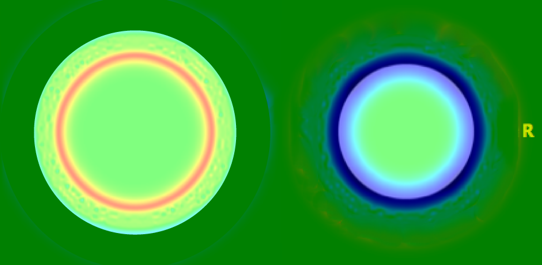

Tensor based morphometry measures the differences in shape of brain structures. Analyses are useful in studies interested in whether growth or volume loss has occurred. This analysis is also useful in detecting small changes in longitudinal studies.
The warp field only represents positions of brain structures and not local shape information. Instead, the Jacobian determinant contains information about the local stretching, shearing and rotation involved in the deformation.
–> Draw example…
<img src=”images/fixed.jpg” width=”45% style=”float:left” /> <img src=”images/moving.jpg” width=”45% style=”float:left” /> 
In order to complete group analyses, all images have to be template space so you know you are comparing apples to apples. For group analyses, images cannot be in native, participant space.
The log Jacobian image is used for analyses. Running antsCorticalThickness pipeline will automatically generate the log Jacobian (i.e., SubjectToTemplateLogJacobian.nii.gz).
Voxel Based Morphometry measures structural differences in tissue classes (e.g., gray matter atrophy). Analyses are useful in studies interested in tissue specific volumetric differences.
The normalized images are adjusted by scaling the intensity of each voxel by the log jacobian. In other words the volume changes due to the non-linear spatial normalization are used to modulate the normalized image. Otherwise your analysis will give you null results because all the images look exactly alike (that’s the point of normalizing to a template).
The modulated normalized gray matter image is used for analyses. This image has to be self generated.
First, you will take the template GM ROI and multiply it with the normalization whole brain image. Remember the value inside the ROI is 1 and the value outside the ROI is 0. When you multiply anything by 0 it equals 0, so when you multiply these two images together, you are left with just normalized gray matter.
<img src=”images/brain.png” width=”30% style=”float:left” /> <img src=”images/roi.png” width=”30% style=”float:left” /> <img src=”images/segmented.png” width=”30% style=”float:left” />
Set your subject and template directories
SUBJ_DIR=~/path/to/subject/directory
TEMPLATE_DIR=~/path/to/template/directory/
Use c3d to multiply the two images together
c3d \
${SUBJ_DIR}/antsCorticalThickness/BrainNormalizedToTemplate.nii.gz \
${TEMPLATE_DIR}/T_template0_gm.nii.gz \
-multiply \
-o ${SUBJ_DIR}/antsCorticalThickness/GMSegmented.nii.gz
The image has been normalized to a template, so at this point the image should be nearly indistinguishable from the template. Any comparison will result in null results. However, if you multiply the image by the log Jacobian, then you are adjusting the intensity of each gray matter voxel by the amount of stretching, shearing, and rotation that occurred.
<img src=”images/segmented.png” width=”45% style=”float:left” /> <img src=”images/modulated.png” width=”45% style=”float:left” />
c3d \
${SUBJ_DIR}/antsCorticalThickness/GMSegmented.nii.gz \
${SUBJ_DIR}/antsCorticalThickness/SubjectToTemplateLogJacobian.nii.gz \
-multiply \
-o ${SUBJ_DIR}/antsCorticalThickness/GMModulated.nii.gz
<img src=”images/workflow.tif” width=”90% style=”float:left” />